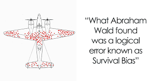
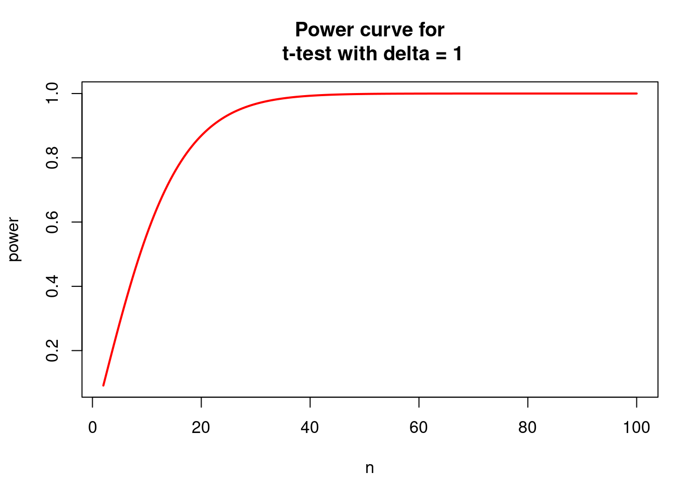
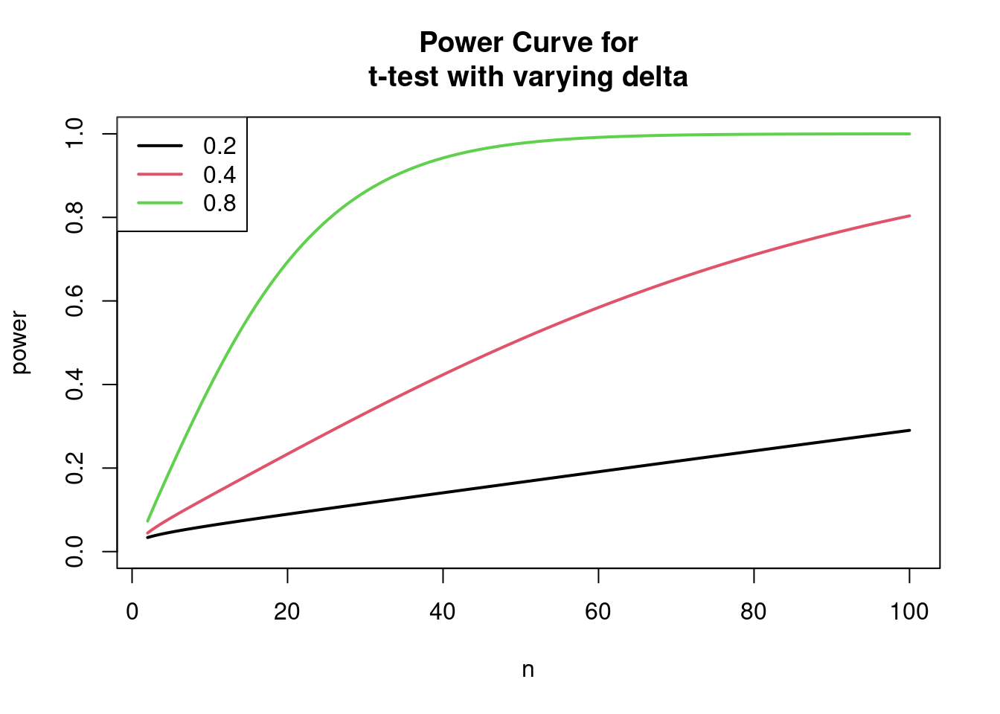

6 Experimental Design
6.1 Some History
Sir Ronald Fisher developed the foundations for the rigourous experimental design when he was a researcher at Rothamsted Experimental Station 1919 -1933. Rothamsted was an agricultural field station and there were a lot of studies conducted there on the effectiveness of different fertiliser treatments, for example. On arriving at Rothamsted, Fisher was struck by how badly the analyses of these field trials were conducted. He set about developing the theory of the Design of Experiments and he also developed statistical methods to correctly analyse the results of experiments. We use the principles laid down by Fisher to this day.
Although Fisher had some wrong ideas about eugenics, the genetics of intelligence and racial differences, he was remarkable in that he almost single-handedly invented what we now know as classical statistics. and also developed the theory of population genetics (along with J. B. S. Haldane and Sewell Wright). He was a giant of 20th century science and an evolutionary biologist at heart. Unfortunately he was rather grumpy and prone to having disagreements and fights with most of his contemporaries. They say you should never meet your heroes and I am glad I never met Fisher. He died in 1962 in Adelaide. His ashes are interred in St. Peters Anglican cathedral in Adelaide. If you go to Adelaide you can visit Fisher’s ashes. Put your hand on the plaque and absorb some of Fisher’s force!
6.2 Experiments
We first consider the simplest experiment: the comparison of two experimental treatments. What is a treatment? A treatment is some sort of manipulation carried out by a researcher on a group of experimental units. An example might be if we are trying to find out the effect of a drug, we may give the drug to some subjects. To contrast this treatment, we will give a placebo to another group of people. The delivery of the drug or placebo are both treatments. The experimental units are the subjects in the experiment.
This simple study has all the properties of an experiment: There is greater than one treatment. (We have 2 treatments, drug and placebo). We are interested in whether the drug works in that the drug treatment is more effective than the placebo, so we can contrast the treatments. We have performed the experiment a number of times, giving either the drug or the placebo to several subjects. Finally, we do this at random, that is, each subject has a probability of 0.5 of receiving either the drug or the placebo. More on the subject of randomness below.
You may have noticed that what we have described is a randomised, controlled trial This is the common term for experiments in the medical field and in the media. Calling a study an RCT is much easier to sell to the general public than an experiment. Subjects generally don’t want to be experimented on or treated as guinea pigs so the RCT terminology is used. Statisticians know that we are all talking about ``experiments.’’
6.3 More terminology
In our example, we can consider the two treatments (Drug and Placebo) to be properties of a unified object, the factor. We thus have a factor Drug with two levels: drug and placebo. In more complicated experiments, there may be more than one factor in an experiment, and the treatments are combinations of the levels of the different factors. Aside: When Fisher defined a factor, he was thinking about genetics, where different alleles were considered to be different genetic factors. We now use the term factor in a more general sense, beyond just allelic differences in phenotypes.
The data we take from our subjects during the experiment are called the response or outcome variables of the experiment. For our drug example, if we were interested in the effect of the drug on blood pressure, then we would measure the blood pressure of each experimental unit (subject) after applying the drug or placebo. The blood pressure would be the response variable. The factor Drug (with levels drug and placebo) is called the explanatory variable and is defined by our experimental design. The difference between the effect of the drug treatment and the placebo is called the effect size.
The placebo treatment is called a control treatment. Controls represent a treatment that contains everything about the drug treatment, except the drug itself. A placebo pill contains no active ingredients but application of a placebo can still affect the results (compared to not taking a pill at all) due to the placebo effect. The effect of taking the drug is thus isolated from all the other factors that might influence the results that occur both in the drug treatment and the placebo control. Any effect, the difference between the two treatments, must be due to the application of the drug alone.
6.4 Randomness
The role of randomness crops up in two places in experiments. The first is that the experimental units differ in small ways from each other. On one hand we should try to use experimental units (subjects, in our case), that are as uniform as possible to reduce the effects of this randomness. This is the reason for using in-bred lines of rats, mice or rabbits in experiments as they are effectively clones with no genetic differences. They are more uniform, at least in their genetics.
On the other hand, if our experiment is expected to be more natural we may be interested in running it on a more representative group of experimental units. For example, we may recruit subjects with different backgrounds, body size, gender, age, etc. So that any effects of the drug will be more like the representative effect seen in a clinical setting where lots of different people seek to take the same drug, but respond differently. Such considerations should lead you to think carefully about the hypothesis you are trying to test (more on hypothesis testing below).
The other source of randomness is that deliberately induced by the experimenter: The treatments are assigned to the subjects at random, using a random number generator. The reasoning here is that such random allocation to treatments serves to break up any systematic differences that could possibly occur among subjects. In contrast, any other mechanism for allocating treatments to experimental units has the potential for systematic bias, which will render the experiment useless. An example might be if we ask subjects to arrive at the clinic at various times during the day, and we gave the drug to all the subjects that arrived early in the morning, and the placebo to the subjects who arrived at the clinic late in the day. If, for example, the effectiveness of the drug depended on the time it was taken (e.g. due to circadian rhythm effects), then our experiment would be destroyed because a systematic bias was introduced during treatment allocation. (We say that the drug effect is confounded with the time the drug was taken. Confounding is a big problem and you should really look out for it in the design of any experiment that you do.) Only random application of treatments to experimental units can avoid these systematic biases.
6.5 Positive and Negative Controls
Most control treatments in experiments are usually negative in the sense that they include all the effects on a treatment, except the one of interest to the researcher. However, there are many situations where we need a positive control: A treatment where an effect is guaranteed to be detected. A common example is when biologists are seeking to sequence an unknown gene. In order to make sure the sequencing experiment is working, they include a gene of known sequence. If the experiment can’t get the correct result for the known sequence, then it is clear that there is something wrong with the experimental technique.
6.6 Blinding of experiments
Blinding in experiments is a very useful technique for avoiding all sorts of systematic biases. The method is to apply the experimental treatment without the subject knowing what treatment they are being given. So in our example, the researcher gives a pill to the subjects without telling them whether the treatment is the drug or the placebo. Of course, the researcher knows this information so it can be used later in the statistical analysis. An even more sneaky method is the so-called double blind trial. Here, both the researcher and the subject do not know which treatment is being applied. The information is kept by a third party and only revealed to the experimenter at the time of the analysis when collecting of data is over. Doubly-blind trials are a powerful technique for controlling many sorts of systematic bias that may be inadvertently introduced by the experimenter and the subject. Sometimes it is not possible to perform such trials, however.
6.7 Covariates
Another useful part of an experiment is to collect other data along with the response variable of interest. For example, in our drug experiment, we could collect information on the sex and body size of the subjects, their level of obesity, family history of heart disease etc. These are all of interest and may be important in contributing to the response of the subjects to the drug treatment. Yet, they are not being experimentally manipulated by the researcher. They are simply extra information that can be used in the interpretation of the experiment. They are called covariates.
It is important to remember that perhaps the defining feature of an experiment is to manipulate the experimental units in some way. In this way we can distinguish cause and effect. However, it is possible to collect data on a lot of covariates and relate them to some other variable (the presumed outcome or response) without manipulating the study system and then derive conclusions about cause and effect. Such observational studies are fraught because they are heavily dependent on the underlying causal model being correct. However, there could easily be other unmeasured variables that are contributing to the outcome, or the measured covariates could be related to each other in complicated ways. Without experimentation, we cannot usually establish cause and effect. (There are some exceptions to this rule but they rely on extra assumptions and are beyond the scope of this course. If you want information about this, ask me in class.)
6.8 “Natural” Experiments or Natural “Experiments”
Some people talk about “natural” experiments, such as those provided by natural disasters or weather events, when it is assumed that treatments have been applied to the experimental units at random by the mechanism of the extreme conditions. However, the quotes should be around “experiment” not natural, as nobody doubts the naturalness of the event but it is somewhat dubious to consider it as an experiment akin to researcher manipulated studies where treatments have been allocated to experimental units at random. Some systematic bias may have been introduced, of which we are not aware.
6.9 Random effects and Blocking
One particularly useful technique in the design of experiments is the use of random effects, also known as blocking. The definition of random effects is slightly complicated so we will leave it to a later chapter. Here we will consider two examples, so you get the idea. Returning to our drug experiment, say we wanted the experiment to be quite large (lots of replicate subjects). So we decide to run the experiment at different clinic locations or hospitals. Now, it is possible that different clinics might produce slightly different results (drug effects). This might be due to the fact that subjects that attend one clinic might receive better treatment, more accurate doses of the drug, may live closer to one clinic rather than another. etc. The upshot is that some clinics will have, on average, higher or lower effect sizes than others. This variability due to the hospital effect leads to the idea of blocking, where we assign patients to blocks (clinics) at random to each of the blocks, The treatments (drug and control) are given to subjects who are a member of a particular clinic, and we use the information of which clinic was attended in the analysis. We then consider the variability in the response to among versus within block effects. So ultimately we are able to model the variation due to blocks and account for it as a component of the variation in the experiment. More on this in the chapter on mixed-effects models. Aside: The term “block” comes from agricultural trials where fields were divided up into blocks, based on the topography of the field.
The second case where random effects and blocking is common is when we take multiple measurements from our subjects. This is called a repeated measures design. In our drug example, we may, in a sense, use each individual as their own control, by first measuring their blood pressure, applying the treatment (drug versus control) and then re-measuring their blood pressure. Here, the “block” is the individual subject. Naturally, some subjects will respond well to the drug, and some not so well. By treating subjects as blocks, we can remove this subject to subject variation and account for it in our analysis. In our simple drug example, we would probably use a paired t-test to test for differences between treatments, within subjects, which is a simple case of a repeated measures analysis.
6.10 Power
I have said previously that we should choose to do our experiment on many experimental units. This is called replication. Then each experimental unit is also known as a replicate. But how many replicates do we need in each treatment? How big should our sample size be?
In a series of papers in the early 20th century, Jerzey Neyman and Egon S. Pearson developed a decision-theoretic approach to hypothesis-testing. The theory was later extended and generalised by Abraham Wald.
 Neyman, Pearson and Wald.
Neyman, Pearson and Wald.
Wald was one of the first to notice the phenomenon of survival bias during World War II.

A centrepiece of the Neyman-Pearson approach is the idea of there being two possible types of error when considering rejecting a hypothesis based on data:
| \(H_0\) False | \(H_0\) True | |
|---|---|---|
| Reject \(H_0\) | Correct | Type I error |
| Accept \(H_0\) | Type II error | Correct |
Thus, a rational approach to hypothesis testing will seek to reject a hypothesis if it is false and accept a hypothesis when it is true. The two types of error are rejecting the null hypothesis when it is true (Type I) and accepting the null hypothesis when it is false (Type II). In the Neyman-Pearson theory, it is usual to fix the Type I error probability (\(\alpha\)) at some constant (often at 0.05, but not necessarily), and then choose a test which minimises the Type II error probability (\(\beta\)), conditional on \(\alpha\). The (null) hypothesis is then either rejected when the associated p-value for the test is less than \(\alpha\), or otherwise accepted.
The Neyman-Pearson theory has come under a lot of criticism since its formulation. Although much maligned, it is still used to justify and compare statistical testing procedures, whether or not scientists accept the paradigm for their everyday data analyses. For our purposes, the theory introduces the concept of “power” of a test, where power is defined as P(Reject \(H_0 | H_0\) is false). That is, 1 minus the Type II error probability, or \(1 − \beta\). (The first person to promote power as a concept was “Student” a.k.a W. S. Gosset, head brewer for the Guinness brewery. (Interestingly, R. A. Fisher (the other main architect of classical statistics) was against the whole idea of power.)
6.11 Factors affecting the Power of a Test
There are several factors affecting the power of a test:
There is a trade-off between α and β such that greater power can be gained by accepting a less stringent condition for the Type I error. In other words, power is increased when α is increased. The shortcoming of setting a higher α is that Type I errors will be more likely. This may not be desirable.
Power can be increased by increasing the effect size. The reasoning is that any test will have trouble rejecting the null hypothesis if the null hypothesis is only
slightlywrong. If the effect size of an experiment (such as the difference between a treatment and a control) is large, then it is easier to detect, and the null hypothesis will be soundly rejected.The use of covariates or blocking variables can also increase the power of a test, as
controllingfor other, nuisance, variables can make the test more precise.Increasing the sample size in an experiment or observational study also increases the power to detect a response.
It is important to carefully consider sample sizes before doing any experimental work. This is because data are expensive to collect, and may involve an appreciable amount of time and money expended by the researcher. Also, especially in medical research, there are ethical issues to consider. Experiments should be designed so that the minimum number of subjects (e.g. rats, dogs, or monkeys) are used in order to arrive at valid scientific conclusions. For these reasons, it is important to take a quantitative approach to maximising power in an experiment and to design experimental protocols that are efficient in their use of resources (subjects).
6.12 Built-in R Functions for Power Analysis
R comes with a wide variety of built-in functions. For power analysis, we need to look to the stats package that comes with R. Try searching for functions for power analysis in the stats package. Your output should look approximately like this:
help.search("power", package="stats")
stats::power Create a Power Link Object
Aliases: power
stats::power.anova.test
Power Calculations for Balanced One-Way
Analysis of Variance Tests
Aliases: power.anova.test
stats::power.prop.test
Power Calculations for Two-Sample Test for
Proportions
Aliases: power.prop.test
stats::power.t.test Power calculations for one and two sample t
tests
Aliases: power.t.test
stats::print.htest Print Methods for Hypothesis Tests and Power
Calculation Objects
Aliases: print.power.htestWe can see that there are 5 functions with power in their name. However, it is clear that power.anova.test, power.prop.test, and power.t.test are the most appropriate for our study of power analysis. We first examine
power.t.test.
6.13 Power of the t-test
Recall that one use of the t-test is used to test for differences between two sample means, drawn from two Normal populations with unknown variance. The null hypothesis is that the samples were drawn from a single population. i.e. H0 : the sample means are not different. Now, examine the help page for power.t.test, part of which is presented below:
?power.t.test
power.t.test
package:stats
R Documentation
Power calculations for one and two sample t tests
Description:
Compute power of test, or determine parameters to obtain target power.
Usage:
power.t.test(n = NULL, delta = NULL, sd = 1, sig.level = 0.05,
power = NULL, type = c("two.sample", "one.sample", "paired"),
alternative = c("two.sided", "one.sided"), strict = FALSE)Notice that power.t.test accepts 8 arguments. Arguments type, alternative and strict describe the behaviour of the t-test. That is, whether the test is a two-sample, one-sample, or paired t-test, and whether it is a two-sided or
one-sided test. Further, we are given the option of including both tails in the power calculation for the two-sided test, by setting strict=TRUE. Note that the default is strict=FALSE. The first 5 arguments determine the type of analysis. To use the function, you specify 4 of the first 5 arguments, and the unspecified argument is the one that is output from the computation. Here’s an example:
power.t.test(n=6, .2, sd=.1, power=NULL)##
## Two-sample t test power calculation
##
## n = 6
## delta = 0.2
## sd = 0.1
## sig.level = 0.05
## power = 0.8764176
## alternative = two.sided
##
## NOTE: n is number in *each* groupNote that we have left the sig.level argument at its default (0.05). We have specified the sample size, and the two arguments that contribute to the effect size (delta, the difference between the means and sd, the common standard deviation. More on effect sizes below). power was set to NULL, as this is the value we are trying to compute. The output is printed, including the estimated power (0.88 in this case).
6.14 Exercises
- Calculate the power of a two-sample, two-sided t-test when n=12, delta=1.5, sd=2.3. Use a significance level of 0.05.
- Using the the same t-test, calculate the sample size needed to attain a power of 0.85, with delta=6, sd=4.5. Use a significance level of 0.05.
- power.anova.test: Calculate the sample size needed for a one-way ANOVA with between-group variance = 3, within-group variance=5, and 4 groups. Use a significance level of 0.05.
- Calculate the power of a one-way ANOVA with 4 groups, within-group variance = 12, between-group variance=4, 20 subjects in each group. Use a significance level of 0.05.
- power.prop.test Calculate the power of the test comparing the proportions in two groups (0.5, 0.4), with 20 in each group. Use a significance level of 0.05.
- Calculate the sample size necessary to detect a difference in proportions where group 1 has a proportion of .6 and group 2 has a proportion of 0.8. Use power=0.85, and a significance level of 0.01.
6.15 Package pwr
Load the pwr package into R using the following command:
library(pwr)and then look at the diverse array of functions provided in the package:
ES.h Effect size calculation for proportions
ES.w1 Effect size calculation in the chi-squared test
for goodness of fit
ES.w2 Effect size calculation in the chi-squared test
for association
cohen.ES Conventional effects size
plot.power.htest Plot diagram of sample size vs. test power
pwr-package Basic Functions for Power Analysis pwr
pwr.2p.test Power calculation for two proportions (same
sample sizes)
pwr.2p2n.test Power calculation for two proportions
(different sample sizes)
pwr.anova.test Power calculations for balanced one-way
analysis of variance tests
pwr.chisq.test power calculations for chi-squared tests
pwr.f2.test Power calculations for the general linear model
pwr.norm.test Power calculations for the mean of a normal
distribution (known variance)
pwr.p.test Power calculations for proportion tests (one
sample)
pwr.r.test Power calculations for correlation test
pwr.t.test Power calculations for t-tests of means (one
sample, two samples and paired samples)
pwr.t2n.test Power calculations for two samples (different
sizes) t-tests of meansNotice that there are many more functions for power analysis in pwr than in built-in package stats. There are additional functions for \(\chi^2\) tests (pwr.chisq.test), Pearson’s product-moment correlation (pwr.r.test), and unbalanced two-sample t-tests (pwr.t2n.test), among others. However, they work in the same way as the previous examples from stats. You specify the values for all the arguments except one (which is left as NULL), and that unspecified variable is computed by the function.
6.16 Exercises
- Calculate the power of the Pearson’s product moment correlation test, where r = 0.8, n = 20, and significance level is 0.05.
- Calculate the sample size necessary to detect a correlation of r = 0.6, with a power of 0.85 and significance level = 0.05.
6.17 Effect Sizes
It was mentioned previously that increasing the effect size (the standardised “difference” between treatment groups) results in an increased power. However, calculation of effect sizes varies from test to test, depending on the underlying distribution of the test statistic. Frequently, we do not know the likely effect size that may occur in an experiment. The best approach is then to do a pilot experiment on a small scale to estimate the likely effect size. In the absence of pilot data, Cohen (1988) provides standard measures of effect size, classified as “small”, “medium”, and “large” for a variety of tests. These effect sizes are built into the pwr package, using the function cohen.ES. Although these “standard” effect sizes are somewhat arbitrary, they can provide a first guide for sample size estimation. Note, however, that a pilot experiment is the recommended way to estimate effect sizes for an experimental study.
6.18 Exercises
- Use
cohen.ESto extract “small”, “medium”, and “large” effect sizes for \(\chi^2\), Pearson’s r and proportion tests. - Use the above effect sizes to calculate sample sizes with power = 0.8, and sig.level = 0.05, using the following functions from the
pwrpackage:pwr.chisq.test, pwr.r.test, pwr.p.test. - Calculate the power of the above tests with sample sizes 10, 50, 100.
- Calculate the detectable effect size for the above tests when power = 0.8 and n = 10, 50, 100.
6.19 Power Curves
Calculating specific values of power, sample size or effect size can be illuminating with regard to the statistical restrictions on experimental design and analysis. But frequently a graph tells the story more completely and succinctly. Here we show how to draw power, sample size, and effect size curves using the above functions in R:
nvals <- seq(2, 100, length.out=200)
powvals <- sapply(nvals, function (x) power.t.test(n=x, delta=1)$power)
plot(nvals, powvals, xlab="n", ylab="power",
main="Power curve for\n t-test with delta = 1",
lwd=2, col="red", type="l")
If we are unsure of our effect size, we can also alter delta to see the effect of both effect size and sample size on power:
deltas <- c(0.2, 0.4, 0.8)
plot(nvals, seq(0,1, length.out=length(nvals)), xlab="n", ylab="power",
main="Power Curve for\nt-test with varying delta", type="n")
for (i in 1:3) {
powvals <- sapply(nvals, function (x) power.t.test(n=x, delta=deltas[i])$power)
lines(nvals, powvals, lwd=2, col=i)
}
legend("topleft", lwd=2, col=1:3, legend=c("0.2", "0.4", "0.8")) ## Exercises 13. Make a graph of the relationship between effect size and power, for a sample size of 5, 10, and 20, using power.anova.test. Use 4 groups, with the within-group variance equal to 1, and the between-group variance varying between 0.1 and 1.2.
6.20 Power Analysis by Simulation
Frequently, the complexity of our experimental designs means that we must go far beyond what can be accomplished with standard software, such as the built-in power functions and the pwr package. Fortunately, R can be easily programmed to produce power analyses for any experimental design. The general approach is:
- Simulate data under the null hypothesis (for checking Type I error prob- abilities) and also for different effect sizes, to estimate power.
- Fit the model to the simulated data.
- Record whether the analysis of the simulated data set was significant, using the usual tests.
- Store the significance level in a vector.
- Repeat from step 1. a large number of times.
- Tabulate how many simulations produced a significant result, and hence calculate power.
Here is an example: Suppose we wish to conduct a study with two fixed factors, leading us to a 2-way analysis of variance (ANOVA), with two levels for each factor. We could simulate data under the null hypothesis (no difference between means) using the following code:
## First set up the design
reps <- 1000
design <- expand.grid(A=c("a", "b"), B=c("c","d"), reps=1:10)
pvals <- vector("numeric", length=reps)
## simulate data under the null hypothesis.
for (i in 1:reps) {
design$response <- rnorm(40) # random data with zero mean
## fit the model
fit <- aov(response~A*B, data=design)
## record the p-value for the interaction term.
## You could record other values.
## Save the p value
pvals[i] <- summary(fit)[[1]][[5]][3]
}
Type1 <- length(which(pvals < 0.05))/reps
print(Type1)## [1] 0.04It appears that the Type I error rate is acceptable for the 2-factor ANOVA interaction term. Now to calculate some power statistics. We will calculate power for a difference between means of 2 units, for sample sizes 5, 10, 20.
ssize <- c(5, 10, 20)
pvals <- matrix(NA, nrow=reps, ncol=3)
## First set up the design
for (j in 1:3) {
reps <- 1000
design <- expand.grid(reps=1:ssize[j], A=c("a", "b"), B=c("c","d"))
## simulate data under the null hypothesis.
for (i in 1:reps) {
design$response <- c(rnorm(3*ssize[j]), rnorm(ssize[j], mean=2))
## fit the model
fit <- aov(response~A*B, data=design)
## record the p-value for the interaction term.
## You could record other values.
## Save the p value
pvals[i,j] <- summary(fit)[[1]][[5]][3]
}
}
Power <- apply(pvals, 2, function (x) length(which(x < 0.05))/reps)
names(Power) <- as.character(ssize)
print(Power)## 5 10 20
## 0.547 0.870 0.995We see that the power is too low for a sample size of 5, but it increases to an acceptable level for 10 replicates per treatment.
6.21 Exercise
- Construct a graph of the relationship between power and sample size for a multiple regression model with 3 predictor variables, over a range of 1 to 10 for each predictor. For the effect size, let the residual error have \(\sigma\) = 5, and \(\beta_1 = 0.1\), \(\beta_2 = 1\) and \(\beta_3 = 5\). Try varying the effect size to examine its effects on power in this case.
6.22 References
Cohen (1988) is the classic text for non-statisticians.
Cohen J., 1988. Statistical Power Analysis for the Behavioural Sciences. Routledge, 2nd ed. Here in the library